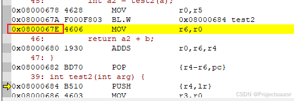

STM32 调试之栈回溯和 CmBacktrace 的使用
[toc]
一、栈回溯
1、寄存器知识
在 Cortex-M 上弄清楚栈的布局，就必须理解 Cortex-M 上的压栈入栈的机制和原理。下面从该体系架构上说说 Cortex-M 上比较重要的细节。

按照 ARM Cortex-M 的设计，一共有 32 个寄存器。
- 13 个通用寄存器，r0-r12
- 2 个不同模式下使用的 SP
- PSP(SP_process)
- MSP(SP_main)
- 1 个链接寄存器 LR(r14)
- 1 个程序计数器（PC）
- 1 个程序状态寄存器（xPSR）
在不同的模式下，R0-R12、SP、LR 是各有一份的，所以这样算下来，总共是 32 个寄存器，但是在不同的模式下，并不能完全看到这 32 个寄存器的状态，只能看到其中的一部分。
- 通用寄存器 R0-R12
上图将通用寄存器分为 low register 和 high registers 就是根据指令集来说的，对于 Thumb 指令，是 16 位的，只能访问到 low register，也就是 R0-R7，而对于 32 位的 Arm 指令，是所有的指令都可以访问到。所以有这样的划分。
- 栈指针SP
一旦涉及到参数的压栈与入栈，或者函数的执行返回的时候，必须会涉及到栈指针的变化。在 Cortex-M 由于涉及到两种不同的 SP 的切换，所以在使用 SP 的时候要格外的小心。
- 程序链接寄存器 LR
程序的链接寄存器在函数返回的时候会被使用到。
- 程序计数寄存器
该寄存器会自动指向当前指向的程序地址。
不同于其他的处理器架构，Cortex-M 的定位一开始就是为实时性、小体积容量的设计考虑的，所以在中断处理这一块，也做了一个十分有意思的设计——==自动压栈==处理。
一般的 CPU 进入中断后都会去进行压栈操作，因为栈就是函数的现场，保护了栈内容，中断退出的时候只需要恢复栈数据就可以恢复到程序执行的状态了。以往这个阶段都是通过人工操作写程序完成的，在 Cortex-M 上，将部分栈由硬件自动压入。其压入栈的顺序一般如下：
1 | |
这些寄存器硬件自动压入，效率上应该有较大的提升。另外的一些寄存器可以手动处理。
2、示例分析
为了方便演示，这里写的示例程序非常简单，而在实际的项目场景中，分析起来会非常复杂。
1 | |
下面进入调试界面，SP 栈指针指向地址 0x2000 0CC8:
现在单步进入 test1：
可以看到，在这一步汇编代码会将 r4-47 以及 lr 入栈：

由汇编代码可以分析出 R0、R1 分别保存的形参 a、b 的值，并分别赋值给了 R5、R4。
栈中数据和前面提到的寄存器是对应的，现在 SP 指针指向了地址 0x2000 0CB8，为什么参考文章 Cortex-M 内核的 OS 特性 双堆栈部分。下面继续分析，进入 test2：
这里的 LR 保存的是刚才 test1 即将执行的指令的地址：

前面的文章提过多次，最低位(lsb) 为 0 表示 arm 指令；最低位为 1 表示 thumb 指令

紧接着又将参数 arg 的值赋给 R0，然后进入到 test3：

到这里就不用入栈了，因为这已经是顶层了。这里的汇编指令也很好分析，不再多讲。最后通过 BX lr 返回到 test2：
注意看，在 test2 中，这里出栈的时候将 LR 的值赋给的 PC 指针，从而完成了回溯的操作。
test1 同理。
二、移植 cm_backtrace
CmBacktrace （Cortex Microcontroller Backtrace）是一款针对 ARM Cortex-M 系列 MCU 的错误代码自动追踪、定位，错误原因自动分析的开源库。主要特性如下：
- 支持的错误包括：
- 断言（assert）
- 故障（Hard Fault, Memory Management Fault, Bus Fault, Usage Fault, Debug Fault）
- 故障原因 自动诊断 ：可在故障发生时，自动分析出故障的原因，定位发生故障的代码位置，而无需再手动分析繁杂的故障寄存器；
- 输出错误现场的 函数调用栈（需配合 addr2line 工具进行精确定位），还原发生错误时的现场信息，定位问题代码位置、逻辑更加快捷、精准。也可以在正常状态下使用该库，获取当前的函数调用栈；
- 支持 裸机 及以下操作系统平台：
- RT-Thread
- UCOS
- FreeRTOS（需修改源码）
- 根据错误现场状态，输出对应的 线程栈 或 C 主栈；
- 故障诊断信息支持多国语言（目前：简体中文、英文）；
- 适配 Cortex-M0/M3/M4/M7 MCU；
- 支持 IAR、KEIL、GCC 编译器；
我们可以通过故障寄存器信息来定位故障原因及故障代码地址，虽然这样能解决一小部分问题，但是重复的、繁琐的分析过程也会耽误很多时间。而且对于一些复杂问题，只依靠代码地址是无法解决的，必须得还原错误现场的函数调用逻辑关系。虽然连接仿真器可以查看到的函数调用栈，但故障状态下是无法显示的，所以还是得一步步 F10/F11 单步去定位错误代码的位置。
而通过 cm_backtrace 调试可以大大地提高我们 Debug 的效率。
1、移植
1 | |
将这些文件移植到工程目录下。
然后进入 cmb_cfg.h，这里的配置项需要我们自己来配置：
cmb_println(...)错误及诊断信息输出 必须配置- 注意 printf 要重定向才能输出到串口
CMB_USING_BARE_METAL_PLATFORM是否使用在裸机平台 使用则定义该宏CMB_USING_OS_PLATFORM是否使用在操作系统平台 操作系统与裸机必须二选一CMB_OS_PLATFORM_TYPE操作系统平台如下：CMB_OS_PLATFORM_RTTCMB_OS_PLATFORM_UCOSIICMB_OS_PLATFORM_UCOSIIICMB_OS_PLATFORM_FREERTOSCMB_OS_PLATFORM_RTX5CMB_OS_PLATFORM_THREADX
CMB_CPU_PLATFORM_TYPECPU平台CMB_CPU_ARM_CORTEX_M0CMB_CPU_ARM_CORTEX_M3CMB_CPU_ARM_CORTEX_M4CMB_CPU_ARM_CORTEX_M7CMB_CPU_ARM_CORTEX_M33
CMB_USING_DUMP_STACK_INFO是否使用 Dump 堆栈的功能 使用则定义该宏CMB_PRINT_LANGUAGE输出信息时的语言 CHINESE/ENGLISH`
我使用的是 STM32F407 裸机，所以配置如下：
1 | |
然后，如果你原本的程序中有 HardFault_Handler，记得注释掉，因为 cmb_fault.S 中也实现了一个 HardFault_Handler
配置好后就可以使用 CmBacktrace 了。
2、API 说明
2.1 库初始化
1 | |
firmware_name固件名称，需与编译器生成的固件名称对应hardware_ver固件对应的硬件版本号software_ver固件的软件版本号
注意 ：以上入参将会在断言或故障时输出，主要起了追溯的作用
2.2 获取函数调用栈
1 | |
buffer存储函数调用栈的缓冲区size缓冲区大小sp待获取的堆栈指针
示例：
1 | |
2.3 追踪断言错误信息
1 | |
sp断言环境时的堆栈指针
注意 ：入参 SP 尽量在断言函数内部获取，而且尽可能靠近断言函数开始的位置。当在断言函数的子函数中（例如：在 RT-Thread 的断言钩子方法中）使用时，由于函数嵌套会存在寄存器入栈的操作，此时再获取 SP 将发生变化，就需要人为调整（加减固定的偏差值）入参值，所以作为新手不建议在断言的子函数中使用该函数。
2.4 追踪故障错误信息
1 | |
fault_handler_lr故障处理函数环境下的 LR 寄存器值fault_handler_sp故障处理函数环境下的 SP 寄存器值
该函数可以在故障处理函数（例如：HardFault_Handler）中调用。另外，库本身提供了 HardFault 处理的汇编文件（点击查看，需根据自己编译器进行选择），会在故障时自动调用 cm_backtrace_fault 方法。所以移植时，最简单的方式就是直接使用该汇编文件。
3、使用示例
1 | |
烧录运行后，从串口打印出如下信息：
这里已经指出了错误原因是 0 做了除数，并还提示我们使用 addr2line 命令，查看函数调用栈详细信息，并定位错误代码：
addr2line
1 | |
这里常用的是以下参数
-e：指定可执行映像名称-a：显示函数地址-f：显示函数名称
运行一下：

进入 Keil 调试状态，看一下这个地址：
直接就定位到了错误的地方，比我们自己分析要方便不少！
4、重新演示
下面再用 CmBacktrace 重新调试一下最开始我们分析的那个例子，对 test3 做了一下修改：
1 | |

调用栈信息和地址信息都打印出来了。